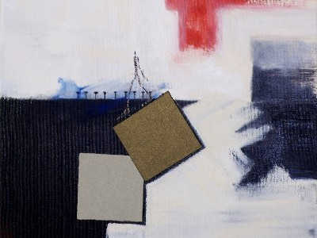
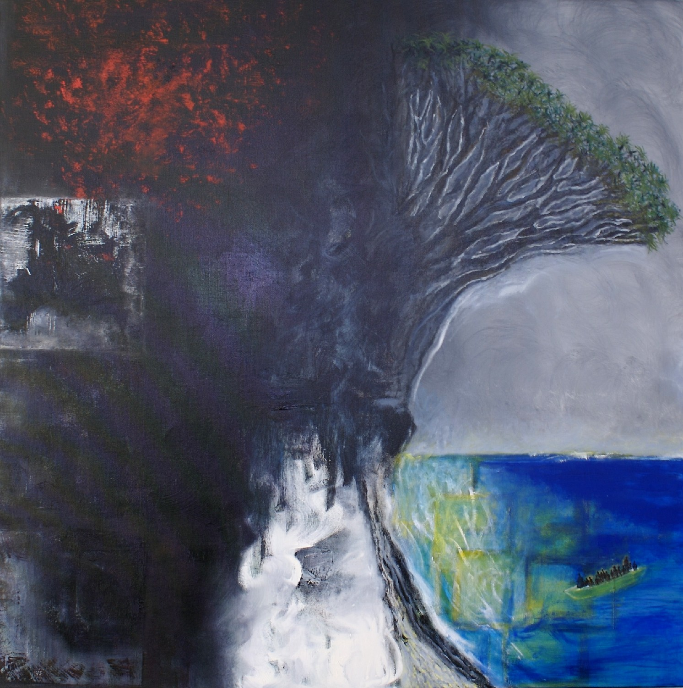
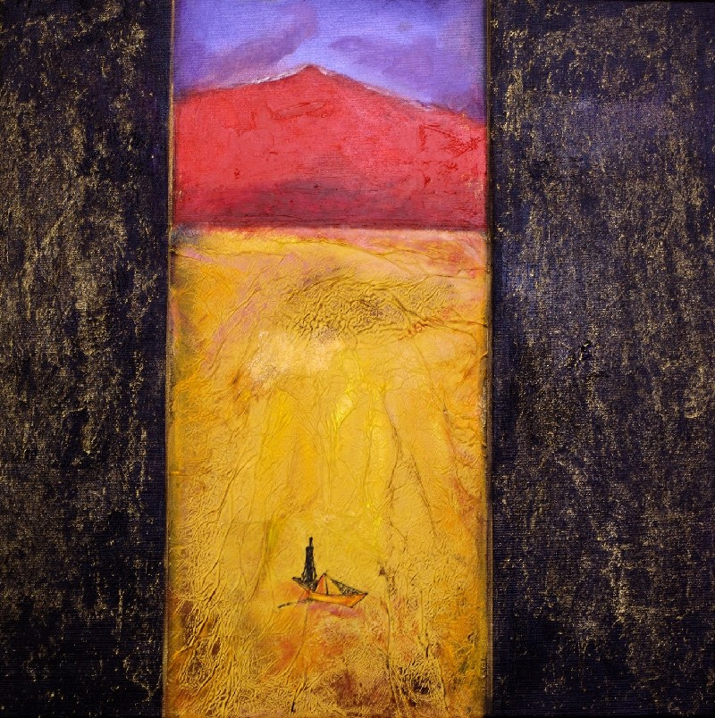
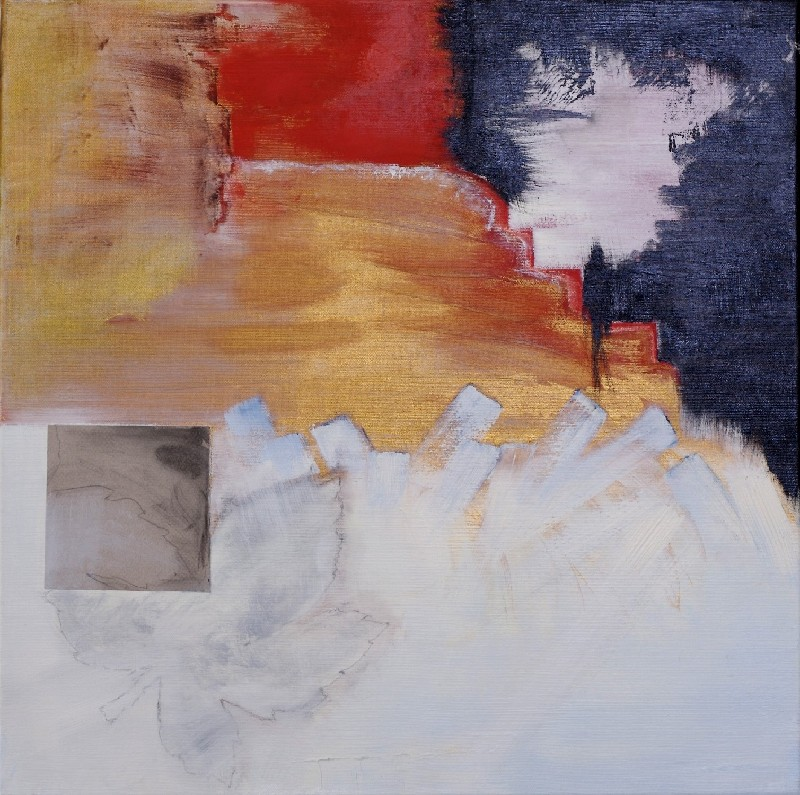
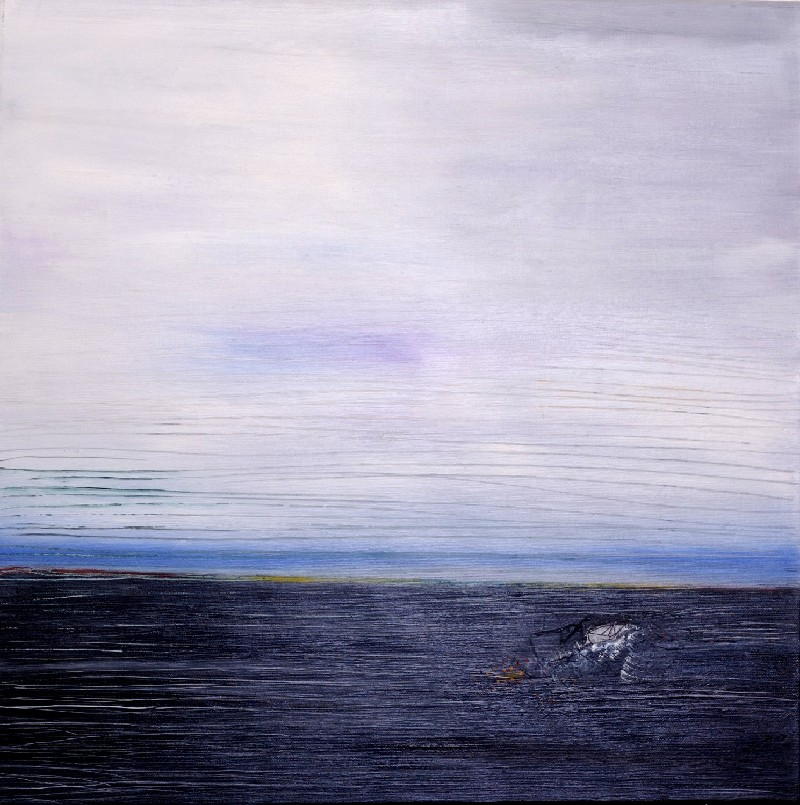
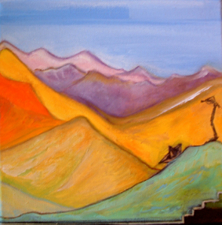

Couleurs en nudité (2007)
Série autour de la peau, de la lumière intérieure et des résonances chromatiques.

Couverture Dragonnier

Le vieux dragonnier

Le vieux volcan

Au-dessous du volcan

Sable noir

Annapurna
« La nudité est couleur, la couleur est nudité. »